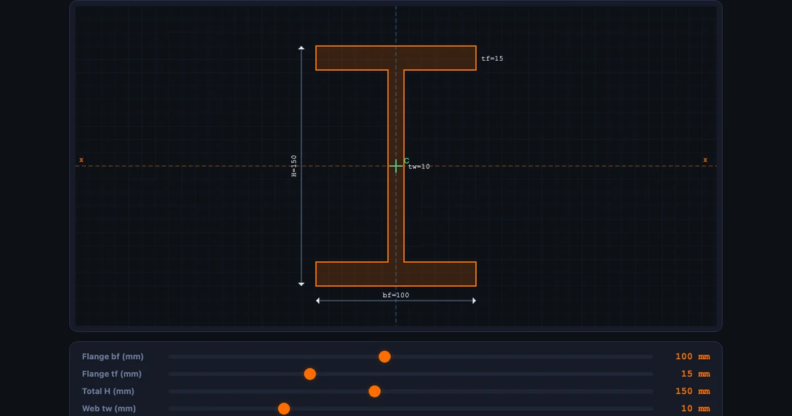
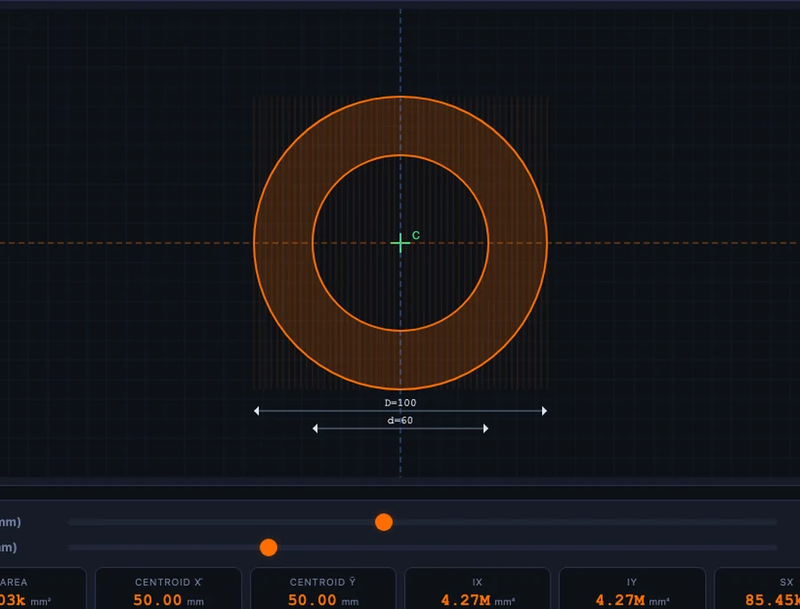

Online Teaching Challenges in Mechanical Engineering — and How Virtual Labs Solve Each One

- The hardest part of teaching mechanical engineering online is the loss of hands-on lab access, which builds the physical intuition that formulas alone cannot convey.
- Free browser-based virtual simulators close most of that gap by rendering live, draggable cross-sections and mechanisms with real calculated readouts (e.g. a default I-beam gives Ix = 15.165 × 10⁶ mm⁴ versus Iy = 2.51 × 10⁶ mm⁴, a 6:1 strong-to-weak-axis ratio).
- The effective teaching shift is from "I show, you watch" to "you explore, I confirm" — using comparison tasks and screenshot-plus-hand-calculation assessments instead of passive demonstrations.
There is a particular kind of frustration that every mechanical engineering instructor teaching online eventually experiences. You have spent fifteen minutes explaining the difference between strong-axis and weak-axis bending of an I-beam. You have drawn the cross-section on screen, labelled every dimension, shown the formula. And then a student asks: “But why is Ix so much bigger than Iy?” In a physical lab you hand them the section and they immediately understand — the material is concentrated far from the x-axis, close to the y-axis. Online, you have no section to hand over. That is the core challenge of online teaching in mechanical engineering, and it keeps repeating at every topic.
Why Mechanical Engineering is Particularly Hard to Teach Online
Mechanical engineering is fundamentally a tactile discipline. Students are supposed to feel the deflection of a beam, see a truss deform under load, watch a four-bar mechanism trace its coupler curve. These experiences build intuition that no amount of typed explanation fully replaces. When that sensory layer disappears in online delivery, two things happen. The weaker students stop believing in the numbers — the formulas become symbols without meaning. The stronger students do well anyway, because they can hold the geometry in their heads. The gap between them widens.
The tools available to bridge that gap have improved dramatically. But most instructors are not aware of all of them, and fewer still have a delivery routine that uses them consistently.
Five Challenges Every Mechanical Engineering Instructor Recognises
Here is a honest list — drawn from real classroom experience, not a survey report.
Challenge 1 — No physical specimens. Students cannot hold a hollow shaft next to a solid one and compare the weight. They cannot flex a thin beam and a thick one with the same hand. Without these reference experiences, abstract comparisons stay abstract.
Challenge 2 — Static 2D graphics for 3D problems. A cross-section drawn on a slide never changes. Students can see that the I-beam formula gives a bigger Ix than a rectangle of the same area, but they cannot explore what happens when the flange gets wider or the web gets thicker. The formula exists; the insight does not arrive.
Challenge 3 — Demos vanish after the session. A live instructor calculation done over video call cannot be replayed. Students who were confused at step 3 cannot rewatch step 4. This is fine for routine problems, but for topics like the parallel axis theorem — where the “aha” moment often arrives ten minutes after the session ends — it is a real loss.
Challenge 4 — No feedback on whether the numbers are right. In a lab, students measure and then check. Online, they calculate and then wonder. An interactive simulator that produces the correct answer lets them verify their hand calculation immediately.
Challenge 5 — Assessment without practicals. It is genuinely hard to test whether a student understands which axis a beam bends about, or why a hollow section is more efficient than a solid one, using a written exam alone. Practical observation used to carry that weight. Without it, assessment is reduced to formula recall.
How the Moment of Inertia Simulator Addresses All Five
The Moment of Inertia Simulator is a direct answer to each challenge above. It renders 8 standard cross-sections — rectangle, circle, hollow circle, hollow rectangle, I-beam, T-section, channel, and angle — with live geometry that students drag to resize. Every property updates instantly: area A, centroid coordinates, second moment of area Ix and Iy, section moduli Sx and Sy, radii of gyration rx and ry, and polar moment J.
For the I-beam at default values (flange bf = 100 mm, flange thickness tf = 15 mm, total height H = 150 mm, web thickness tw = 10 mm), the key results are:
\[A = 4{,}200 \text{ mm}^2 \qquad I_x = 15.165 \times 10^6 \text{ mm}^4 \qquad I_y = 2.51 \times 10^6 \text{ mm}^4\]
That 6:1 ratio between Ix and Iy is visible in the canvas rendering — and when a student drags the flange width from 100 mm to 60 mm they can watch Iy collapse while Ix barely changes. That is not a calculation. That is intuition being built.
For the rectangle and parallel axis theorem, students can verify the standard formula directly:
\[I_x = \dfrac{b \, h^3}{12}\]
And the parallel axis theorem:
\[I = \bar{I} + A \cdot d^2\]
where \(\bar{I}\) is the centroidal second moment of area and \(d\) is the distance from the centroid to the new axis. The I-beam simulator builds this in automatically for each flange element, showing students what the theorem is actually doing.

A Classroom Scenario That Actually Works
Here is a 20-minute online session structure that has worked repeatedly. The topic is second moment of area for structural profiles.
Warm-up (4 min). Open the simulator. Both you and the students have it running simultaneously. Ask everyone to select “Rectangle” and set width b = 50 mm, height h = 100 mm. Ask them to read off Ix and Iy before you show anything. Students immediately notice Ix is four times larger than Iy. They have just discovered that orientation matters — no explanation needed yet.
Concept build (8 min). Explain the formula \(I_x = bh^3/12\). Show the cube exponent is on h (the dimension perpendicular to the bending axis). Switch the rectangle to b = 100, h = 50 and watch Ix and Iy swap. Ask: “If this were a floor joist, which orientation would you choose?” They already know. You just confirmed it with maths.
Comparison task (8 min). Ask students to find the cross-section with the largest Ix for an area A ≤ 5,000 mm². They try I-beam, T-section, and hollow circle. The I-beam wins every time, and they can see exactly why: material is concentrated far from the centroidal x-axis, maximising the \(Ad^2\) term in the parallel axis theorem.
Students who do this task independently — not watching a screen-share — actually make the discovery themselves. It sticks in a way that a worked example does not.
For a complementary angle on how distributed loads affect the beam itself once you know Ix, the Shear Force and Bending Moment Diagram guide shows the full chain from load to bending moment to stress.
Building Your Virtual Lab Routine for Mechanical Engineering
Start with geometry, not formulas. Every mechanical engineering topic has a geometric component that a virtual simulator can make visible before any formula is introduced. Load the simulator first, let students explore, then introduce the equation that formalises what they observed.
Use comparison tasks, not demonstrations. Watching a screen-share is passive. Giving students two configurations to compare — “which has a larger section modulus?” — is active. Even if both you and the student are looking at the same simulator, the student who types in the numbers builds memory that the watcher does not.
Assign screenshot evidence assessments. Ask students to configure a specific I-beam, screenshot the result showing all readouts, and annotate their hand calculation alongside it. If their hand calculation says Ix = 15.0 × 10&sup6; mm&sup4; but the simulator shows 15.165 × 10&sup6; mm&sup4;, they have a rounding error to find and fix. That feedback loop used to require a physical lab. It no longer does.
Cover mechanisms and dynamics too. Cross-section theory is one slice. The Spring-Mass-Damper Vibrations Simulator and the Four-Bar Linkage Simulator cover dynamics and kinematics with the same “change a parameter, watch what moves” approach.
Try These Free Mechanical Engineering Simulators
All tools below are free — no account, no download, runs in any browser.
Key Takeaways
- The absence of physical specimens is the hardest gap to close in online mechanical engineering teaching — virtual simulators with live geometry and real numbers are the best available substitute.
- The Moment of Inertia Simulator on NHIT VisualLab computes Ix, Iy, Sx, Sy, rx, ry and J for 8 standard cross-sections, including I-beam (Ix = 15.165 × 10&sup6; mm&sup4; for the default profile).
- Comparison tasks — “which section gives the largest Sx for a fixed area?” — drive deeper understanding than instructor demonstrations because students make the discovery themselves.
- Screenshot-based assessments (simulator readout + annotated hand calculation) give verifiable, practical-style evidence of understanding without a physical lab.
- The whole NHIT VisualLab library — beam bending, truss analysis, shaft torsion, gear trains, four-bar linkage — can fill an entire semester of virtual lab hours, all free and browser-based.
- The key teaching shift online is from “I show, you watch” to “you explore, I confirm” — virtual labs make that shift achievable even on a tight time budget.
Frequently Asked Questions
What is the biggest challenge in teaching mechanical engineering online?
The biggest challenge is the absence of hands-on lab access. Mechanical engineering relies on physical intuition — holding a shaft, seeing a beam deflect, feeling the difference between a solid and hollow cross-section. Free virtual simulators like those on NHIT VisualLab bridge this gap by rendering live cross-sections, animated mechanisms, and real calculated readouts that students can manipulate at any time.
Can free virtual simulators really replace a mechanical engineering lab?
Not replace — but they come remarkably close for the conceptual and computational parts of the curriculum. A virtual moment of inertia simulator shows exactly how Ix and Iy change as you modify an I-beam’s flange width, which is the key insight students need before they ever touch a real section. The physical lab still matters for fabrication and feel, but the concept-building phase can be entirely virtual.
How does the moment of inertia simulator help mechanical engineering students?
The simulator lets students select from 8 standard cross-sections — rectangle, circle, hollow circle, hollow rectangle, I-beam, T-section, channel, and angle — and instantly see Ix, Iy, section modulus, radius of gyration, and polar moment update in real time. For an I-beam with flange 100 mm, total height 150 mm, and web 10 mm, the simulator shows Ix = 15.165 × 10&sup6; mm&sup4; and Iy = 2.51 × 10&sup6; mm&sup4;, making the asymmetry between bending axes immediately visible.
What virtual labs work best for mechanical engineering distance learning?
The most effective virtual labs for mechanical engineering distance learning are those that combine live calculation with animation. The moment of inertia, beam bending, truss analysis, and shaft torsion simulators on NHIT VisualLab are particularly strong because students can see numbers change in response to geometry. Four-bar linkage and gear train simulators add mechanism kinematics. All are browser-based with no installation.
How do I assess practical skills in an online mechanical engineering course?
The most reliable approach is evidence-based assessment using simulator screenshots. Ask students to configure a specific cross-section or truss, capture the result showing all readouts, and annotate it with their hand calculations to verify the numbers match. This tests both analytical ability and tool literacy. You can also set comparison tasks — “find the configuration that maximises Sx while keeping A below 3,000 mm²” — which require genuine understanding, not just button-clicking.
Online delivery has genuinely changed what mechanical engineering teaching looks like. Some of those changes are losses. But the ability to put a live, fully calculated cross-section or mechanism in every student’s hands simultaneously — that was never possible in a traditional lab.
The tools are free and browser-based. Start with the Moment of Inertia Simulator in your next session and see what happens when students explore the geometry before you explain the formula.